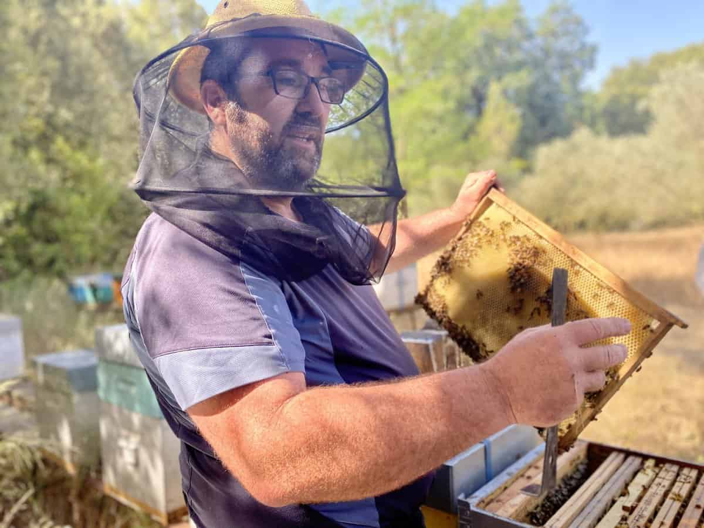

<title>Bruno Comes, apiculteur</title>
<meta name="claude:viewport-fit-sides" content="cover">
<link rel="stylesheet" href="https://fonts.googleapis.com/css2?family=Fraunces:opsz,wght,SOFT@9..144,600,100;9..144,800,100&family=Figtree:wght@400;600;800&display=swap">
<style>
/* Concept : un seul thème chaud, choisi exprès. Garrigue, calcaire et mer ; du miel coule du haut des cadres. */
:root{
  color-scheme:light;
  --stone:#f5ecd9; --paper:#fffaf0; --ink:#2a1c0c; --ink-soft:#5a4630;
  --honey:#eaa21a; --honey-deep:#a8620a; --honey-light:#ffd772;
  --garrigue:#3f4f22; --garrigue-light:#7f8f4c; --sea:#17586b; --wood:#6b4423; --wood-dark:#3e2611;
  --display:"Fraunces",Georgia,serif; --body:"Figtree",system-ui,sans-serif;
  --shadow:0 2px 4px rgba(62,38,17,.12),0 10px 20px rgba(62,38,17,.14),0 28px 50px rgba(62,38,17,.16);
}
*{box-sizing:border-box}
body{background:var(--stone);color:var(--ink);font:18px/1.65 var(--body);overflow-x:hidden;
  background-image:url("data:image/svg+xml,%3Csvg xmlns='http://www.w3.org/2000/svg' width='56' height='98'%3E%3Cpath d='M28 0l28 16v33L28 65 0 49V16zM28 65l28 16v33M28 65L0 81v33' fill='none' stroke='%23a8620a' stroke-opacity='.09' stroke-width='1.5'/%3E%3C/svg%3E")}
.wrap{max-width:1120px;margin-inline:auto;padding-left:max(18px,env(safe-area-inset-left,0px));padding-right:max(18px,env(safe-area-inset-right,0px))}
h1,h2,h3{font-family:var(--display);line-height:1.08;text-wrap:balance;margin:0;font-variation-settings:"SOFT" 100}
h2{font-size:clamp(2rem,5vw,3.2rem);margin-bottom:.5em;text-shadow:0 1px 0 #fff,0 3px 8px rgba(168,98,10,.18)}
p{margin:0 0 1em;max-width:60ch}
a{color:var(--sea);font-weight:600}
.eyebrow{display:inline-block;font-size:.78rem;letter-spacing:.16em;text-transform:uppercase;font-weight:800;color:var(--honey-deep);margin-bottom:.9em}
section{padding-block:5rem;position:relative}

/* navigation */
.nav{display:flex;gap:1rem;align-items:center;justify-content:space-between;flex-wrap:wrap;padding-block:1.2rem}
.logo{display:flex;align-items:center;gap:.6rem;font-family:var(--display);font-size:1.3rem;font-weight:800;color:var(--ink);text-decoration:none}
.logo svg{width:38px;height:38px;filter:drop-shadow(0 2px 3px rgba(168,98,10,.4))}
.nav nav{display:flex;gap:1.3rem;flex-wrap:wrap}
.nav nav a{color:var(--ink);text-decoration:none}
.nav nav a:hover{color:var(--honey-deep)}

/* boutons en relief */
.btns{display:flex;gap:.9rem;flex-wrap:wrap;margin-top:1.6rem}
.btn{display:inline-block;padding:.85rem 1.5rem;border-radius:999px;font-weight:800;text-decoration:none;transition:transform .15s,box-shadow .15s}
.btn.honey{background:linear-gradient(180deg,var(--honey-light),var(--honey) 55%,var(--honey-deep));color:var(--wood-dark);
  box-shadow:inset 0 2px 0 rgba(255,255,255,.6),0 5px 0 #7a4606,0 10px 18px rgba(122,70,6,.35)}
.btn.honey:hover{transform:translateY(2px);box-shadow:inset 0 2px 0 rgba(255,255,255,.6),0 3px 0 #7a4606,0 6px 12px rgba(122,70,6,.35)}
.btn.line{background:var(--paper);color:var(--ink);box-shadow:inset 0 0 0 2px var(--ink),0 5px 0 var(--ink)}
.btn.line:hover{transform:translateY(2px);box-shadow:inset 0 0 0 2px var(--ink),0 3px 0 var(--ink)}

/* hero */
.hero .grid{display:grid;grid-template-columns:1fr 1.1fr;gap:3rem;align-items:center;padding-block:2rem 5rem}
.hero h1{font-size:clamp(2.5rem,6.5vw,4.6rem);font-weight:800;color:var(--ink);text-shadow:0 1px 0 #fff,0 4px 14px rgba(168,98,10,.25)}
.hero h1 em{font-style:normal;color:var(--honey-deep);background:linear-gradient(180deg,transparent 62%,rgba(234,162,26,.35) 62%)}
.hero .lead{font-size:1.2rem;color:var(--ink-soft);margin-top:1.2rem}

/* cadre en bois qui coule */
.frame{position:relative;border-radius:18px;padding:14px;background:linear-gradient(145deg,#8a5a2e,var(--wood) 40%,var(--wood-dark));box-shadow:var(--shadow),inset 0 2px 0 rgba(255,255,255,.25);transform-style:preserve-3d;transition:transform .2s ease-out}
.frame>.inner{border-radius:8px;overflow:hidden;position:relative;box-shadow:inset 0 4px 12px rgba(0,0,0,.45)}
.frame>.inner svg.scene{display:block;width:100%;height:auto}
.caption{position:absolute;left:12px;bottom:12px;background:rgba(255,250,240,.92);padding:.3rem .7rem;border-radius:6px;font-size:.85rem;font-weight:600;color:var(--ink)}

.drip{position:absolute;left:0;right:0;top:-2px;height:74px;z-index:3;pointer-events:none;overflow:visible}
.drip svg{width:100%;height:100%;display:block;filter:drop-shadow(0 4px 3px rgba(122,70,6,.35))}
.drop{position:absolute;width:11px;height:15px;margin-left:-5.5px;border-radius:50% 50% 50% 50%/60% 60% 42% 42%;
  background:radial-gradient(circle at 35% 30%,#fff3c4 0 12%,var(--honey-light) 25%,var(--honey) 60%,var(--honey-deep));
  opacity:0;animation:fall 4.5s cubic-bezier(.55,0,.9,.5) infinite}
@keyframes fall{0%{opacity:0;transform:translateY(-6px) scale(.3)}18%{opacity:1;transform:translateY(0) scale(1)}35%{transform:translateY(0) scale(1,1.15)}85%{opacity:1}100%{opacity:0;transform:translateY(190px) scale(.9,1.3)}}

/* bande de citation */
.quote{background:var(--paper);box-shadow:var(--shadow);border-radius:22px;padding:2.5rem clamp(1.2rem,4vw,3rem);display:grid;grid-template-columns:auto 1fr;gap:1.8rem;align-items:center;position:relative}
.quote svg{width:84px;height:84px}
.quote p{font-family:var(--display);font-size:clamp(1.35rem,3vw,1.9rem);line-height:1.3;margin:0;max-width:none}

/* miels */
.shelf{display:grid;grid-template-columns:repeat(auto-fit,minmax(270px,1fr));gap:2.2rem;margin-top:2.5rem}
.honey-card{position:relative;background:var(--paper);border-radius:20px;padding:5rem 1.6rem 1.8rem;box-shadow:var(--shadow);min-width:0;transition:transform .2s ease-out;transform-style:preserve-3d}
.honey-card .drip{height:60px}
.jar{width:150px;height:auto;display:block;margin:-1rem auto 1rem;filter:drop-shadow(0 14px 10px rgba(62,38,17,.3));transform:translateZ(40px)}
.honey-card h3{font-size:1.7rem;margin-bottom:.3rem}
.honey-card .where{font-size:.8rem;font-weight:800;letter-spacing:.12em;text-transform:uppercase;color:var(--garrigue)}
.honey-card p{color:var(--ink-soft);margin:.7rem 0 0}
.meter{display:flex;align-items:center;gap:.6rem;margin-top:1rem;font-size:.85rem;color:var(--ink-soft);font-weight:600}
.meter span{flex:1;height:10px;border-radius:99px;background:linear-gradient(90deg,#fbe3a0,#e9a21a,#7a3f06);position:relative;box-shadow:inset 0 1px 3px rgba(0,0,0,.25)}
.meter span::after{content:"";position:absolute;top:50%;left:var(--pos);width:16px;height:16px;margin:-8px 0 0 -8px;border-radius:50%;background:var(--paper);border:3px solid var(--ink);box-shadow:0 2px 4px rgba(0,0,0,.3)}
.price{margin-top:1.2rem;padding-top:.9rem;border-top:2px dashed #e4d3ae;font-size:.9rem;color:var(--ink-soft)}

/* terroir */
.terroir{background:linear-gradient(180deg,var(--garrigue),#2d3a17);color:#f6eed9;margin-top:3rem}
.terroir>.drip{height:80px;top:-2px}
.terroir h2{color:#fff4d6;text-shadow:0 3px 10px rgba(0,0,0,.35)}
.terroir .eyebrow{color:var(--honey-light)}
.terroir p{color:#e6dcc2}
.places{display:grid;grid-template-columns:repeat(auto-fit,minmax(250px,1fr));gap:1.8rem;margin-top:2.5rem}
.place{background:linear-gradient(160deg,rgba(255,255,255,.12),rgba(255,255,255,.03));border:1px solid rgba(255,244,214,.2);border-radius:18px;padding:1.6rem;box-shadow:0 18px 40px rgba(0,0,0,.35),inset 0 1px 0 rgba(255,255,255,.2);min-width:0;transition:transform .2s ease-out}
.place svg{width:100%;height:110px;display:block;margin-bottom:1rem;border-radius:10px}
.place h3{font-size:1.5rem;color:var(--honey-light);margin-bottom:.4rem}
.place p{margin:0}

/* histoire */
.story{display:grid;grid-template-columns:1fr 1fr;gap:3rem;align-items:center}
.photo .inner img{display:block;width:100%;height:auto}
.story-time{margin-top:3rem;max-width:760px;margin-inline:auto}
.kraft{background:linear-gradient(135deg,#e3c690,#d4b278);border-radius:6px;padding:2.2rem;box-shadow:var(--shadow);transform:rotate(-1.2deg);position:relative}
.kraft::before{content:"";position:absolute;top:-14px;left:50%;width:110px;height:28px;margin-left:-55px;background:rgba(255,250,235,.7);box-shadow:0 1px 3px rgba(0,0,0,.15);transform:rotate(2deg)}
.timeline{list-style:none;margin:0;padding:0;display:grid;gap:1.3rem}
.timeline li{display:grid;grid-template-columns:7.5rem 1fr;gap:1rem;align-items:baseline}
.timeline b{font-family:var(--display);font-size:1.35rem;color:var(--wood-dark)}
.timeline span{color:var(--ink)}

/* contact */
.contact-card{position:relative;background:var(--paper);border-radius:24px;box-shadow:var(--shadow);padding:5rem clamp(1.2rem,4vw,3rem) 2.5rem;display:grid;grid-template-columns:1.1fr 1fr;gap:2.5rem}
dl{margin:0;display:grid;gap:1.2rem}
dt{font-size:.75rem;letter-spacing:.14em;text-transform:uppercase;font-weight:800;color:var(--honey-deep)}
dd{margin:.15rem 0 0;font-size:1.25rem;font-weight:600;overflow-wrap:anywhere;user-select:all}
.note{font-size:.9rem;color:var(--ink-soft)}
footer{padding-block:2.5rem;font-size:.9rem;color:var(--ink-soft);text-align:center}

.bee{animation:buzz 6s ease-in-out infinite}
.bee.b2{animation-duration:7.5s;animation-delay:-2s}
@keyframes buzz{0%,100%{transform:translate(0,0)}25%{transform:translate(14px,-10px)}50%{transform:translate(-6px,-18px)}75%{transform:translate(-14px,-4px)}}

@media (max-width:820px){.hero .grid,.story,.contact-card{grid-template-columns:1fr}.quote{grid-template-columns:1fr;text-align:center}.quote svg{margin-inline:auto}.timeline li{grid-template-columns:1fr;gap:0}section{padding-block:3.5rem}}
@media (prefers-reduced-motion:reduce){.drop,.bee{animation:none}.drop{display:none}.frame,.honey-card,.place{transition:none}}
:focus-visible{outline:3px solid var(--sea);outline-offset:3px}
</style>

<!-- éléments réutilisés -->
<svg width="0" height="0" style="position:absolute" aria-hidden="true">
  <defs>
    <linearGradient id="honeyG" x1="0" y1="0" x2="0" y2="1">
      <stop offset="0" stop-color="#ffd772"/><stop offset=".45" stop-color="#eaa21a"/><stop offset="1" stop-color="#a8620a"/>
    </linearGradient>
    <pattern id="vichy" width="10" height="10" patternUnits="userSpaceOnUse">
      <rect width="10" height="10" fill="#fff"/><rect width="5" height="10" fill="#b8322a" opacity=".55"/><rect width="10" height="5" fill="#b8322a" opacity=".55"/>
    </pattern>
    <symbol id="dripShape" viewBox="0 0 400 70" preserveAspectRatio="none">
      <path fill="url(#honeyG)" d="M0 0V12H40C45 12 45 18 45 49A5 5 0 0 0 55 49C55 18 55 12 60 12H120C125 12 125 16 125 24A5 5 0 0 0 135 24C135 16 135 12 140 12H205C210 12 210 18 210 56A5 5 0 0 0 220 56C220 18 220 12 225 12H290C295 12 295 18 295 32A5 5 0 0 0 305 32C305 18 305 12 310 12H355C360 12 360 18 360 44A5 5 0 0 0 370 44C370 18 370 12 375 12H400V0Z"/>
      <path fill="#fff" opacity=".35" d="M0 2H400V5H0Z"/>
    </symbol>
    <symbol id="jar" viewBox="0 0 140 170">
      <ellipse cx="70" cy="164" rx="52" ry="5" fill="#000" opacity=".12"/>
      <rect x="22" y="6" width="96" height="28" rx="6" fill="url(#vichy)" stroke="#7a2a20" stroke-width="2"/>
      <path d="M18 34h104v6H18z" fill="#c9b48a"/>
      <rect x="14" y="40" width="112" height="120" rx="22" fill="currentColor"/>
      <rect x="14" y="40" width="112" height="120" rx="22" fill="url(#jarShade)"/>
      <rect x="26" y="52" width="11" height="92" rx="5.5" fill="#fff" opacity=".45"/>
      <rect x="30" y="80" width="80" height="54" rx="5" fill="#fbf1d8" stroke="#6b4423" stroke-width="2"/>
    </symbol>
    <linearGradient id="jarShade" x1="0" x2="1">
      <stop offset="0" stop-color="#fff" stop-opacity=".18"/><stop offset=".6" stop-color="#000" stop-opacity="0"/><stop offset="1" stop-color="#000" stop-opacity=".28"/>
    </linearGradient>
  </defs>
</svg>

<header class="hero">
  <div class="wrap">
    <div class="nav">
      <a class="logo" href="#">
        <svg viewBox="0 0 40 40" aria-hidden="true"><path d="M20 2l16 9v18l-16 9-16-9V11z" fill="url(#honeyG)" stroke="#6b4423" stroke-width="2"/><path d="M14 20c0-4 12-4 12 0s-12 4-12 0z" fill="#2a1c0c"/><path d="M16 17c-3-5 1-7 4-3M24 17c3-5-1-7-4-3" fill="#fff" stroke="#2a1c0c"/></svg>
        Bruno Comes
      </a>
      <nav><a href="#miels">Les miels</a><a href="#terroir">Le terroir</a><a href="#histoire">Son histoire</a><a href="#contact">Contact</a></nav>
    </div>
    <div class="grid">
      <div>
        <span class="eyebrow">Apiculteur à Six-Fours-les-Plages</span>
        <h1>Le miel du <em>Cap Sicié</em>, de la ruche à votre table.</h1>
        <p class="lead">Garrigue, bruyère, lavande. Des miels récoltés entre les collines et la mer, sur les hauteurs de Jaumard et sur l'île des Embiez, vendus en direct par celui qui s'occupe des abeilles.</p>
        <div class="btns">
          <a class="btn honey" href="#contact">Venir chercher son miel</a>
          <a class="btn line" href="#miels">Voir les miels</a>
        </div>
      </div>

      <div class="frame tilt">
        <div class="drip"><svg><use href="#dripShape"/></svg>
          <i class="drop" style="left:12.5%;top:52px;animation-delay:0s"></i>
          <i class="drop" style="left:53.75%;top:59px;animation-delay:1.6s"></i>
          <i class="drop" style="left:91.25%;top:47px;animation-delay:3s"></i>
        </div>
        <div class="inner">
          <svg class="scene" viewBox="0 0 600 420" role="img" aria-label="Illustration : ruches sur les collines du Cap Sicié, face à la mer et à l'île des Embiez">
            <defs>
              <linearGradient id="sky" x1="0" y1="0" x2="0" y2="1"><stop offset="0" stop-color="#ffe7a8"/><stop offset="1" stop-color="#f3a948"/></linearGradient>
              <linearGradient id="sea" x1="0" y1="0" x2="0" y2="1"><stop offset="0" stop-color="#2d8aa1"/><stop offset="1" stop-color="#123f4e"/></linearGradient>
            </defs>
            <rect width="600" height="420" fill="url(#sky)"/>
            <circle cx="470" cy="105" r="70" fill="#fff4cf" opacity=".45"/>
            <circle cx="470" cy="105" r="44" fill="#fff6d8"/>
            <rect y="250" width="600" height="170" fill="url(#sea)"/>
            <path d="M330 268h220M360 290h200M400 315h180" stroke="#bfe6ef" stroke-width="2" opacity=".5" stroke-linecap="round"/>
            <path d="M0 262C90 215 170 190 260 205C340 218 390 175 470 190C530 200 570 228 600 245V265H0Z" fill="#8a9656"/>
            <ellipse cx="505" cy="305" rx="58" ry="11" fill="#55642e"/>
            <path d="M462 300c10-8 22-10 32-6 12-6 26-4 40 4" fill="#6d7c3c"/>
            <path d="M0 420V245C60 205 125 145 205 135C265 128 305 165 345 215C385 265 425 305 475 335C510 355 550 380 600 398V420Z" fill="#4c5c27"/>
            <path d="M0 420V300C70 280 150 285 230 320C290 345 330 380 380 420Z" fill="#3a4a1c"/>
            <g fill="#2f3d14"><circle cx="150" cy="190" r="9"/><circle cx="240" cy="175" r="8"/><circle cx="290" cy="200" r="10"/><circle cx="330" cy="240" r="8"/><circle cx="110" cy="230" r="11"/><circle cx="395" cy="285" r="9"/></g>
            <g fill="#9b7fb8"><circle cx="160" cy="300" r="4"/><circle cx="172" cy="306" r="4"/><circle cx="185" cy="300" r="4"/><circle cx="250" cy="340" r="4"/><circle cx="262" cy="346" r="4"/></g>
            <g fill="#f2e6c9" stroke="#6b5434" stroke-width="1.5"><rect x="193" y="115" width="22" height="18"/><path d="M190 116L204 104L218 116Z"/><rect x="201" y="96" width="5" height="9"/></g>
            <g stroke="#3e2611" stroke-width="2">
              <g transform="translate(55 318)"><rect x="-3" y="-6" width="38" height="7" fill="#8a5a2b"/><rect width="32" height="24" fill="#f2c14e"/><rect y="9" width="32" height="2" fill="#3e2611"/></g>
              <g transform="translate(102 330)"><rect x="-3" y="-6" width="38" height="7" fill="#8a5a2b"/><rect width="32" height="24" fill="#e9eef0"/><rect y="9" width="32" height="2" fill="#3e2611"/></g>
              <g transform="translate(149 345)"><rect x="-3" y="-6" width="38" height="7" fill="#8a5a2b"/><rect width="32" height="24" fill="#7fb3c4"/><rect y="9" width="32" height="2" fill="#3e2611"/></g>
            </g>
            <g class="bee"><ellipse cx="120" cy="280" rx="6" ry="4" fill="#2a1c0c"/><ellipse cx="119" cy="275" rx="4" ry="3" fill="#fff" opacity=".8"/></g>
            <g class="bee b2"><ellipse cx="200" cy="300" rx="6" ry="4" fill="#2a1c0c"/><ellipse cx="199" cy="295" rx="4" ry="3" fill="#fff" opacity=".8"/></g>
          </svg>
          <span class="caption">Les ruches de Jaumard, face aux Embiez</span>
        </div>
      </div>
    </div>
  </div>
</header>

<section>
  <div class="wrap">
    <div class="quote">
      <svg viewBox="0 0 40 40" aria-hidden="true"><path d="M20 2l16 9v18l-16 9-16-9V11z" fill="url(#honeyG)" stroke="#6b4423" stroke-width="1.5"/></svg>
      <p>Un miel a le goût de l'endroit où les abeilles butinent. Ici, c'est le thym, la bruyère et la lavande, avec le vent de la mer.</p>
    </div>
  </div>
</section>

<section id="miels">
  <div class="wrap">
    <span class="eyebrow">Les miels</span>
    <h2>Trois miels, trois paysages</h2>
    <p>Chaque pot vient des ruches de Bruno. Les quantités dépendent de la saison et des fleurs : demandez-lui ce qui est disponible.</p>
    <div class="shelf">
      <article class="honey-card tilt">
        <div class="drip"><svg><use href="#dripShape"/></svg><i class="drop" style="left:53.75%;top:46px;animation-delay:.4s"></i></div>
        <svg class="jar" viewBox="0 0 140 170" style="color:#d88c12" aria-hidden="true"><use href="#jar"/><text x="70" y="104" text-anchor="middle" font-family="Fraunces,Georgia,serif" font-size="15" font-weight="800" fill="#3e2611">Garrigue</text><text x="70" y="122" text-anchor="middle" font-family="Figtree,sans-serif" font-size="9" fill="#6b4423">Cap Sicié</text></svg>
        <span class="where">Collines du Cap Sicié</span>
        <h3>Miel de garrigue</h3>
        <p>Le miel des collines provençales : thym, romarin et plantes sauvages. Un goût franc et aromatique.</p>
        <div class="meter">Doux <span style="--pos:60%"></span> Corsé</div>
        <div class="price">Formats et prix : à renseigner avec Bruno</div>
      </article>
      <article class="honey-card tilt">
        <div class="drip"><svg><use href="#dripShape"/></svg><i class="drop" style="left:12.5%;top:44px;animation-delay:2.1s"></i></div>
        <svg class="jar" viewBox="0 0 140 170" style="color:#7a3f06" aria-hidden="true"><use href="#jar"/><text x="70" y="104" text-anchor="middle" font-family="Fraunces,Georgia,serif" font-size="15" font-weight="800" fill="#3e2611">Bruyère</text><text x="70" y="122" text-anchor="middle" font-family="Figtree,sans-serif" font-size="9" fill="#6b4423">Sous-bois</text></svg>
        <span class="where">Sous-bois du cap</span>
        <h3>Miel de bruyère</h3>
        <p>Un miel foncé au caractère puissant. Pour ceux qui aiment les saveurs marquées.</p>
        <div class="meter">Doux <span style="--pos:88%"></span> Corsé</div>
        <div class="price">Formats et prix : à renseigner avec Bruno</div>
      </article>
      <article class="honey-card tilt">
        <div class="drip"><svg><use href="#dripShape"/></svg><i class="drop" style="left:91.25%;top:42px;animation-delay:3.3s"></i></div>
        <svg class="jar" viewBox="0 0 140 170" style="color:#f3cf6a" aria-hidden="true"><use href="#jar"/><text x="70" y="104" text-anchor="middle" font-family="Fraunces,Georgia,serif" font-size="15" font-weight="800" fill="#3e2611">Lavande</text><text x="70" y="122" text-anchor="middle" font-family="Figtree,sans-serif" font-size="9" fill="#6b4423">Domaine Souviou</text></svg>
        <span class="where">Avec le Domaine Souviou</span>
        <h3>Miel de lavande</h3>
        <p>Un miel clair et doux, produit en partenariat local, notamment avec le Domaine Souviou.</p>
        <div class="meter">Doux <span style="--pos:18%"></span> Corsé</div>
        <div class="price">Formats et prix : à renseigner avec Bruno</div>
      </article>
    </div>
  </div>
</section>

<section id="terroir" class="terroir">
  <div class="drip"><svg><use href="#dripShape"/></svg>
    <i class="drop" style="left:12.5%;top:52px;animation-delay:1s"></i><i class="drop" style="left:75%;top:58px;animation-delay:2.6s"></i>
  </div>
  <div class="wrap" style="padding-top:2rem">
    <span class="eyebrow">Le terroir</span>
    <h2>Entre garrigue et Méditerranée</h2>
    <p>Les abeilles de Bruno vivent sur un bout de côte varoise où la colline plonge dans la mer. C'est ce paysage qu'on retrouve dans chaque cuillère.</p>
    <div class="places">
      <article class="place tilt">
        <svg viewBox="0 0 300 110" aria-hidden="true"><rect width="300" height="110" fill="#f3c46b"/><path d="M0 110V60C60 40 120 30 180 45C230 58 270 70 300 80V110Z" fill="#6b7a36"/><g transform="translate(120 60)" stroke="#3e2611" stroke-width="2"><rect x="-3" y="-6" width="42" height="7" fill="#8a5a2b"/><rect width="36" height="26" fill="#f2c14e"/></g><g transform="translate(175 70)" stroke="#3e2611" stroke-width="2"><rect x="-3" y="-6" width="42" height="7" fill="#8a5a2b"/><rect width="36" height="26" fill="#e9eef0"/></g></svg>
        <h3>Jaumard</h3>
        <p>Le quartier de Six-Fours-les-Plages où Bruno est installé et accueille ceux qui viennent chercher leur miel.</p>
      </article>
      <article class="place tilt">
        <svg viewBox="0 0 300 110" aria-hidden="true"><rect width="300" height="110" fill="#ffd98a"/><rect y="70" width="300" height="40" fill="#1f6a80"/><path d="M0 110V50C50 30 100 12 150 15C200 18 240 50 290 85V110Z" fill="#4c5c27"/><g fill="#f2e6c9" stroke="#6b5434" stroke-width="1.5"><rect x="140" y="2" width="18" height="14"/><path d="M137 3L149 -6L161 3Z"/></g></svg>
        <h3>Cap Sicié</h3>
        <p>Des collines de garrigue et de bruyère qui dominent la mer. Les ruches sont posées tout autour.</p>
      </article>
      <article class="place tilt">
        <svg viewBox="0 0 300 110" aria-hidden="true"><rect width="300" height="110" fill="#ffe3a0"/><rect y="55" width="300" height="55" fill="#1f6a80"/><ellipse cx="150" cy="62" rx="110" ry="14" fill="#5e6d30"/><path d="M60 60c20-14 50-18 80-12 30-8 70-6 100 10" fill="#7a8a40"/><path d="M30 85h60M190 92h80" stroke="#bfe6ef" stroke-width="2" opacity=".6"/></svg>
        <h3>Île des Embiez</h3>
        <p>Des ruches installées sur l'île, face à Six-Fours, au milieu des fleurs du bord de mer.</p>
      </article>
    </div>
  </div>
</section>

<section id="histoire">
  <div class="wrap story">
    <div>
      <span class="eyebrow">Son histoire</span>
      <h2>De pompier à apiculteur</h2>
      <p>Bruno a découvert les abeilles dans les années 2000, en autodidacte, alors qu'il était pompier. La passion a pris le dessus : en 2016, il en a fait son métier.</p>
      <p>Aujourd'hui, il s'occupe lui-même de ses ruches et vend son miel sans intermédiaire, à ceux qui viennent le voir à Jaumard.</p>
    </div>
    <div class="frame photo tilt">
      <div class="drip"><svg><use href="#dripShape"/></svg>
        <i class="drop" style="left:53.75%;top:59px;animation-delay:.6s"></i><i class="drop" style="left:91.25%;top:47px;animation-delay:2.4s"></i>
      </div>
      <div class="inner">
        
        <span class="caption">Bruno au rucher, cadre en main</span>
      </div>
    </div>
  </div>
  <div class="wrap story-time">
    <div class="kraft">
      <ul class="timeline">
        <li><b>Années 2000</b><span>Premières ruches, en autodidacte, à côté de son métier de pompier.</span></li>
        <li><b>2016</b><span>Bruno devient apiculteur professionnel.</span></li>
        <li><b>Aujourd'hui</b><span>Des ruches autour du Cap Sicié et sur l'île des Embiez. Vente directe toute l'année.</span></li>
      </ul>
    </div>
  </div>
</section>

<section id="contact">
  <div class="wrap">
    <div class="contact-card">
      <div class="drip"><svg><use href="#dripShape"/></svg><i class="drop" style="left:53.75%;top:58px;animation-delay:.8s"></i></div>
      <div>
        <span class="eyebrow">Acheter du miel</span>
        <h2>Passez à la miellerie</h2>
        <p>Vente directe et accueil sur rendez-vous, toute l'année. Appelez ou écrivez à Bruno pour convenir d'un moment.</p>
        <div class="btns">
          <a class="btn honey" href="tel:+33680518259">Appeler Bruno</a>
          <a class="btn line" href="mailto:fcomes@free.fr">Lui écrire</a>
        </div>
        <p class="note" style="margin-top:1.2rem">Si un bouton ne réagit pas, les coordonnées sont à côté.</p>
      </div>
      <dl>
        <div><dt>Téléphone</dt><dd>06 80 51 82 59</dd></div>
        <div><dt>E-mail</dt><dd>fcomes@free.fr</dd></div>
        <div><dt>Adresse</dt><dd>187 ancien chemin de Jaumard<br>83140 Six-Fours-les-Plages</dd></div>
        <div><a href="https://www.google.com/maps/search/?api=1&amp;query=187+ancien+chemin+de+Jaumard+83140+Six-Fours-les-Plages">Voir l'itinéraire sur Google Maps</a></div>
      </dl>
    </div>
  </div>
</section>

<footer>
  <div class="wrap">Bruno Comes, apiculteur · 187 ancien chemin de Jaumard, 83140 Six-Fours-les-Plages<br>Maquette : photos, prix et mentions légales à compléter.</div>
</footer>

<script>
(function(){
  if (matchMedia('(prefers-reduced-motion: reduce)').matches || !matchMedia('(pointer: fine)').matches) return;
  document.querySelectorAll('.tilt').forEach(function(el){
    el.addEventListener('pointermove',function(e){
      var r=el.getBoundingClientRect(),x=(e.clientX-r.left)/r.width-.5,y=(e.clientY-r.top)/r.height-.5;
      el.style.transform='perspective(900px) rotateX('+(-y*8)+'deg) rotateY('+(x*10)+'deg) translateY(-4px)';
    });
    el.addEventListener('pointerleave',function(){el.style.transform='';});
  });
})();
</script>
